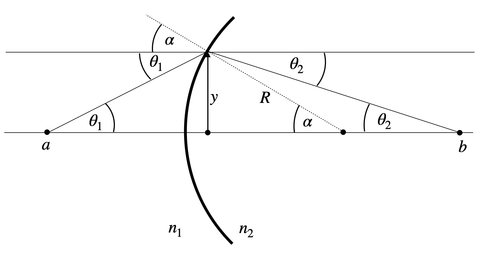
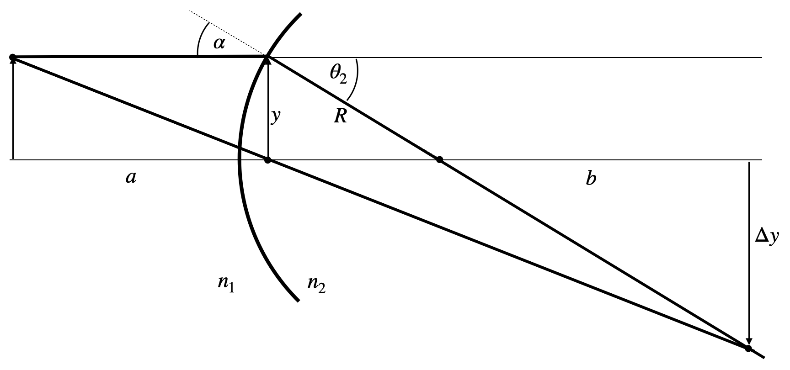

This page was generated from `/home/lectures/exp3/source/notebooks/L2/Optical Elements II.ipynb`_.

Optical Elements Part II¶
[5]:
## just for plotting later
import pandas as pd
import numpy as np
import matplotlib.pyplot as plt
from spectrumRGB import wavelength_to_rgb
%matplotlib inline
%config InlineBackend.figure_format = 'retina'
plt.rcParams.update({'font.size': 12,
'axes.titlesize': 18,
'axes.labelsize': 16,
'axes.labelpad': 14,
'lines.linewidth': 1,
'lines.markersize': 10,
'xtick.labelsize' : 16,
'ytick.labelsize' : 16,
'xtick.top' : True,
'xtick.direction' : 'in',
'ytick.right' : True,
'ytick.direction' : 'in',})
Prism¶
Prisms are wedge shaped optical elements made of a transparent material as, for example, of glass. A special form of such a prism is an isosceles prism with two sides of equal length. The two equal sides enclose an angle \(\gamma\). When light is coupled into that prism light is refracted twice. First the incendent angle \(\alpha_1\) is changed into a refracted angle \(\beta_1\). This refracted ray then hits the second interface under an angle \(\beta_2\) leading again to a refraction into the outgoing angle \(\alpha_2\). What is now interesting is the total deflection of the incident ray, which is measured by the angle \(\delta\).
|
|---|
Fig.: Refraction of rays on a prism. |

Deflection angle¶
We can calculate the deflection angle \(\delta\) from a number of considerations. First consider the following relations between the angles in the prism and Snell’s law
where \(\theta_2\) is the angle between the incident surface normal and the outgoing ray. The total deflection angle \(\delta\) is then
or
from which we obtain
as the deflection angle.
[2]:
def deflection(alpha_1,gamma,n0,n1):
g=gamma*np.pi/180
return(alpha_1+np.arcsin(n1*np.sin(g-np.arcsin(n0*np.sin(alpha_1)/n1))))-g
[3]:
a_1=np.linspace(0.1,np.pi/2,100)
plt.figure(figsize=(4,5))
plt.plot(a_1*180/np.pi,deflection(a_1,45,1,1.5)*180/np.pi,label=r"$\gamma=45$ °")
plt.plot(a_1*180/np.pi,deflection(a_1,30,1,1.5)*180/np.pi,label=r"$\gamma=30$ °")
plt.plot(a_1*180/np.pi,deflection(a_1,10,1,1.5)*180/np.pi,label=r"$\gamma=10$ °")
plt.xlabel(r"incindence angle $\alpha_1$ [°]")
plt.ylabel(r"deflection angle $\delta$ [°]")
plt.legend()
plt.show()
Minimum deflection angle¶
If we now would like to know how the deflection angle changes with the incident angle \(\alpha_1\), we calculate the derivative of the deflection angle \(\delta\) with respect to \(\alpha_1\), i.e.,
We are here especially interested in the case, where this change in deflection is reaching a minimum, i.e., \(\mathrm d\delta/\mathrm d\alpha_1 =0\). This readily yields
This means a change in the incidence angle \(\mathrm d\alpha_1\) yields an opposite change in the outgoing angle \(-\mathrm d\alpha_2\). We may later observe that in the experiment.
As both, the incident and the outgoing angle are related to each other by Snells’s law, we may introduce the derivatives of Snell’s law for both interfaces, e.g.,
\(\cos(\alpha_1)\mathrm d\alpha_1=n\cos(\beta_1)\mathrm d\beta_1\)
\(\cos(\alpha_2)\mathrm d\alpha_2=n\cos(\beta_2)\mathrm d\beta_2\)
where \(n\) is the refractive index of the prism material and the material outside is air (\(n_{\rm air}=1\)). Replacing \(\cos(\alpha)=\sqrt{1-\sin^2(\alpha)}\) and dividing the two previous equations by each other readily yields
The latter equation is for \(n\neq 1\) only satisfied if \(\alpha_1=\alpha_2=\alpha\). In this case, the light path through the prism must be symmetric and we may write down the minimum deflection angle \(\delta_{\rm min}\):
Minimum prism deflection
The minimum deflection angle of an isosceles prism with a prism angle \(\gamma\) is given by
In this case, we may also write down Snell’s law using \(\sin(\alpha)=n\sin(\beta)\), which results in
Dispersion¶
Very important applications now arise from the fact, that the refractive index is a material property, which depends on the color (frequency or wavelength) of light. We do not yet understand the origin of this dependence. The plots below show the wavelength dependence of three different glasses. You may find much more data on the refractive index of different materials in an online database.
[4]:
bk7=pd.read_csv("data/BK7.csv",delimiter=",")
sf10=pd.read_csv("data/SF10.csv",delimiter=",")
fk51a=pd.read_csv("data/FK51A.csv",delimiter=",")
[5]:
plt.plot(bk7.wl*1000,bk7.n,label="BK7")
plt.plot(sf10.wl*1000,sf10.n,label="SF10")
plt.plot(fk51a.wl*1000,fk51a.n,label="FK51A")
plt.xlim(300,900)
plt.xlabel("wavelength [nm]")
plt.ylabel("refractive index n")
plt.legend()
plt.show()
[6]:
bk7=pd.read_csv("data/BK7.csv",delimiter=",")
[86]:
a_1=np.linspace(0.15,np.pi/2,100)
plt.figure(figsize=(12,4))
plt.subplot(1,2,1)
for wl in np.linspace(0.400,0.700,100):
n1=np.interp(wl,bk7.wl,bk7.n)
c=wavelength_to_rgb(wl*1000, gamma=0.8)
plt.plot(a_1*180/np.pi,deflection(a_1,45,1,n1)*180/np.pi,color=c)
plt.xlabel(r"incindence angle $\alpha_1$ [°]")
plt.ylabel(r"deflection angle $\delta$ [°]")
plt.subplot(1,2,2)
for wl in np.linspace(0.400,0.700,100):
n1=np.interp(wl,bk7.wl,bk7.n)
c=wavelength_to_rgb(wl*1000, gamma=0.8)
plt.plot(a_1*180/np.pi,deflection(a_1,45,1,n1)*180/np.pi,color=c)
plt.xlabel(r"incindence angle $\alpha_1$ [°]")
plt.ylabel(r"deflection angle $\delta$ [°]")
plt.xlim(30,45)
plt.ylim(25,30)
plt.show()
The plots have a general feature, which is that the refractive index is largest at small wavelength (blue colors), while it drops continuously with increasing wavelength towards the red (800 nm). If you would characterize the dependence by the slope, i.e., \(\mathrm dn/\mathrm d\lambda\) then all displayed curves show in the visible range
\(\frac{\mathrm dn}{\mathrm d\lambda}<0\), is called normal dispersion
while
\(\frac{\mathrm dn}{\mathrm d\lambda}>0\), is called anomalous dispersion
This wavelength dependence of the refractive index will yield a dependence of the deflection angle on the color of light as well. The change of the deflection angle with the refractive index can be calculated to be
together with the relation
we obtain
The refraction of white light on a prism, therefore, splits the different colors composing white light spatially into a colored spectrum. Thereby the light with the longest wavelength is deflected the least, while the one with the highest refractive index is deflected most.
|
|---|
Fig.: Spectrum as created by a prism in the lecture. |

|
|---|
Fig.: Deflection of different wavelength of light in a prism with normal dispersion. |


This dependence is very important as it enables spectroscopy, i.e., the recording of the intensity of light as a function of the wavelength.
|
|---|
Fig.: Principle and technical realization of a prism spectrometer. |


DIY prism
If you do not have a prism at home, which of course most people do, you can try to create your own, by a mirror, which you dip into a water basin. Shine some white light with the flash lamp on it and observe the reflected and refracted light especially at the edges. If you want it a bit better, integrate a small aperature into a piece of black paper and put it in fornt of the flash light.
|
|---|
Fig.: Home made water prism. |

The dependence of the refractive index of water on the wavelength is, however, weak. Yet, it is enough to also show the well known colors of the rainbow. We will later refer to the colors of the rainbow.
[8]:
h2o=pd.read_csv("data/H2O.csv",delimiter=",")
[9]:
plt.plot(h2o.wl*1000,h2o.n,label="H2O")
plt.xlim(300,900)
plt.ylim(1.3,1.36)
plt.xlabel("wavelength [nm]")
plt.ylabel("refractive index n")
plt.legend()
plt.show()
The most important optical elements are lenses, which come in many different flavors. They consist of curved surfaces, which most commonly have the shape of a part of a spherical cap. It is, therefore, useful to have a look at the refraction at spherical surfaces.
 |
|---|
Fig.: Refraction at a curved surface. |
What we would like to calculate is the distance \(b\) and the angle \(\theta_2\) at which a ray crosses the optical axis if it originated at a distance \(a\) under an angle \(\theta_1\) on the left side. This will help us to obtain an imaging equation for a lens. For the above geometry we may write down Snell’s law as
In addition, we may write down a number of definitions for the angular functions, which will turn out to be useful.
\(\sin(\alpha)=\frac{y}{R}\)
\(\tan(\theta_1)=\frac{y}{a}\)
\(\tan(\theta_2)=\frac{y}{b}\)
To find now an imaging equation, we do an approximation, which is very common in optics. This is the so called paraxial approximation. It assumes that all angles involved in the calculation are small, such that we can resort to the first order approaximation of the angular functions. At the end, this will yield a linearization of these function. For small angles, we obtain
\(\sin(\theta)\approx \theta\)
\(\cos(\theta)\approx 1\)
\(\tan(\theta)=\frac{\sin(\theta)}{\cos(\theta)}\approx \theta\)
With the help of these approximations we can write Snell’s law for the curved surface as
With some slight transformation which you will find in the video of the online lecture we obtain, therefore,
which is a purely linear equation in \(y\) and \(\theta_1\).
Let us now assume light is coming form a point a distance \(y\) from the optical axis and there is a ray traveling parallel to the optical axis hitting the spherical surface at \(y\), while a second ray is incident for \(y=0\).
 |
|---|
Fig.: Image formation at a curved surface. |
We may apply our obatined formula for the two cases.
\(\theta_1=0\):
and thus
\(y=0\):
Combining both equations yields
where we define the new quantity focal length which only depends on the properties of the curved surface
Imaging Equation Spherical Refracting Surface
The sum of the inverse object and image distances equals the inverse focal length of the spherical refracting surface
where the focal length of the refracting surface is given by
in the paraxial approximation.